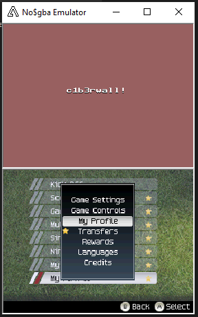

Introducción al desarrollo de exploits en ARM
C1b3rWall Academy 2020
Pedro Javier Fernández (pedro-javierf)
Pedro Javier Fernández
pedro-javierf- Reversing, exploiting, programación, ...
- Secretario @ LibreLabUCM.
- Devblog hacking:
Diapositivas
Disponibles en:https://pedro-javierf.github.io/es/talks/c1b3rwall2020
Conocimientos previos (recomendados)
- Lenguaje C o C++
- Conocimientos básicos computación (notación hexadecimal, etc)
- Ganas de aprender.
exploit
Técnica o programa que abusa una vulnerabilidad en un sistema.Motivación
¿Por qué es interesante conocer sobre la arquitectura ARM?
Hay varias razones de peso:
Smartphones
Otros muchos dispositivos...
Muchos, muchos dispositivos:
Contenidos
- Conceptos básicos de la arquitectura ARM.
- Conceptos básicos sobre la memoria y el curso de ejecución de los programas.
- Breve introducción a nuestros "sistemas de pruebas".
- Stack Buffer Overflow (no NX)
- teoría
- ejemplo práctico (reproducible)
- Mitigación NX bit y cómo superarla
- Mitigación ASLR y cómo superarla
1. Conceptos Básicos
- El Stack.
- Registros.
- Subrutinas.
1.1 El Stack o pila

1.2 Registros Existen 16* registros de 32bits (4 bytes) disponibles para el programador.
| Nombre | Propósito |
|---|---|
| r0 - r11 | Propósito General |
| r12 o IP | IPC |
| r13 o SP | Stack Pointer |
| r14 o LR | Link Register |
| r15 o PC | Program Counter |
mov r4, #7
add r4, r4, #3
1.2 Subrutinas
"Piezas" de código que podemos reutilizar cuantas veces queramos. (Otros nombres: funciones, procedimientos, e incluso métodos).
Existen 2 tipos:
- Subrutinas simples
- Subrutinas que llaman a otras subrutinas
1.3 Subrutinas
Ejemplo 1: subrutina simple
Código Principal:
_main: //2000000
mov r0, r7
bl _IncrementRegister0 //Llamada a la subrut.
mov r7, r0
Subrutina:
_IncrementRegister0: //20064f0
add r0, r0, #1
bx lr //Vuelve a la dirección indicada por lr
1.2 Subrutinas
La siguiente instrucción:
bl _IncrementRegister0 @Llamamos a la subrutina
De forma invisible al programador, esta instrucción hace 2 cosas:
- Guarda la dirección a la que hay que volver después de ejecutar la subrutina. Concretamente en el registro LR.
- Cambia el valor del registro PC a la dirección de la subrutina. Supongamos que _IncrementRegister0 se encuentra en la dirección de memoria 0x02000A00. Entonces el nuevo valor del PC será 0x02000A00 y allí es dónde continuará la ejecución.
La rutina se encarga al terminar de ejecutar otra instrucción: (bx lr), que restaurará en el PC el valor que haya en ese momento en LR. Es decir:
PC = LR
bl _IncrementRegister0 @Llamamos a la subrutina
La rutina se encarga al terminar de ejecutar otra instrucción: (bx lr), que restaurará en el PC el valor que haya en ese momento en LR. Es decir: PC = LR
Ejemplo 2: subrutina que utiliza otras subrutinas
Código Principal:
_main: @ 2000000
mov r0, r7
bl _PrintText @Llamada a la subrut.
mov r7, r0
Subrutina:
_PrintText: @ 20064f0
push {lr}
mov r1, #0
bl _PrintCharacter @Llama a otra subrutina
...
pop {pc}
2. Vulnerabilidades de memoria + curso de ejecución
El objetivo final es que el valor de una dirección de memoria donde tengamos nuestro código "malicioso", acabe en el registro PC.
2. Vulnerabilidades de memoria + curso de ejecución
Como vimos anteriormente:
_PrintText: @ 20064f0
push {lr}
mov r1, #0
bl _PrintCharacter @Llama a otra subrutina
...
pop {pc}
Si logramos modificar el STACK antes de que esto ocurra... ¡¡Éxito!!
Breve introducción a nuestro "sistema de pruebas".
Sistemas reales con vulnerabilidades realesNintendo DS - ARM7 y ARM9
Año de lanzamiento: 2006. Precio actual: < 20€
Seguridad: comprobación de firmas del código.
No DEP/NX bit.
- emulador no$gba
- emulador DeSmune.
+
Nintendo 3DS - ARM9 y ARM11
Año de lanzamiento: 2011. Precio actual: 20-40€
Seguridad: CPU segura dedicada. Sistema Operativo con varios niveles de privilegio.
Protección DEP/NX bit.
+
+
Stack Buffer Overflow
(*sin NX)¿Cómo puede llegar un valor malicioso llegar al stack?.
¿Y si pudiésemos sobreescribir valores del stack de forma no intencionada?
Stack Buffer Overflow
(*sin NX)Stack Buffer Overflow
(*sin NX)¿Unos fifitas?
TODOS los juegos de FIFA para Nintendo DS tienen al menos una vulnerabilidad de este tipo.
Stack Buffer Overflow
(*sin NX)FIFA08: El stack overflow se encuentra en el nombre de perfil de la partida guardada:

Una partida guardada normal.
Una partida modificada con una cadena de texto mayor.
¡Hemos sobrescrito el valor de LR en el stack y este se ha propagado hasta el PC!

Localizamos que 'AAAA's llegan al PC. Reemplazamos con la dirección donde reside nuestro código.
La imagen completa. Código y relleno.

De esa forma, logramos ejecutar código no firmado por Nintendo.
Por supuesto, funciona en el hardware de verdad ;).
Stack Buffer Overflow en C
Existen funciones estándard de C que son vulnerables o causan este tipo de problemas con la memoria:- scanf()
- gets()
- strcpy()
- memcpy()
Estas funciones están consideradas obsoletas pero se siguen utilizando.
Stack Buffer Overflow en C
Cualquier función hecha por un programador y que trabaje con arrays o buffers, puede ser vulnerable.Conclusiones: Stack Buffer Overflow
(*sin NX)Si no existe ningún tipo de medida de protección contra ataques de corrupción de memoria, es trivial aprovechar un fallo y redirigir el flujo de ejecución a nuestro propio código.
- Secure (co)processors --> baremetal
Stack Buffer Overflow + mitigaciones
Por supuesto, la tecnología ha avanzado y tenemos medidas de seguridad para mitigar estos ataques.NX(No eXecute) bit / DEP(Data Execution Prevention)
No todas las zonas de la memoria pueden utilizarse para ejecutar código.
- Si podemos escribir (rw-) en una página, no podremos ejecutar código de esa página.
- Si podemos ejecutar código (r-x) en una página, no podremos modificar sus contenidos.
Stack Buffer Overflow + mitigaciones
¿Cómo evadimos esta protección?Stack Buffer Overflow + mitigaciones
ROPReturn Oriented Programming
Stack Buffer Overflow + mitigaciones
ROP: un tipo de ataque de reutilización de código.¿No podemos inyectar nuestro propio payload? No problem: utilizaremos el código que ya existe en memoria
Stack Buffer Overflow con DEP (ROP)
Imagen: Per Larsen
Stack Buffer Overflow con DEP (ROP)
A cada una de esas piezas la llamaremos gadget. Al conjunto de todas estas piezas encadenadas lo conocemos como "rop chain" (cadena de gadgets).Stack Buffer Overflow con DEP (ROP)
Tutoriales Intel x86:Los gadgets son piezas de código que acaban con una instrucción RETURN que ejecuta nuestro próximo gadget
Stack Buffer Overflow con DEP (ROP)
La realidad en ARM:Los gadgets son piezas de código que terminan con una instrucción que nos permite saltar a otro gadget en una dirección indicada por nosotros.
No existe la instrucción RETURN
Stack Buffer Overflow con DEP (ROP)
Ejemplos de instrucciones de retorno en ARM
pop {r0, r7, pc} //pop pc
pop {r2, pc} //pop pc
pop {pc} //pop pc
pop {r4} @pop registro
b r4 @Esto es JOP
La instrucción pop {lista de registros} extrae del STACK los valores y los copia a los registros indicados en la lista.
Stack Buffer Overflow con DEP (ROP)
También podemos usar ROP para llamar directamente a funciones enteras que existan. También a syscalls (funciones del Sistema Operativo)
svc #7 //svcSleep()
svc #0xB7 //svcCreateThread()
...
1. Cómo obtener gadgets
Existen 2 fuentes de obtención de gadgets:- Archivos binarios de los programas (ELF, PE(.exe), etc)
- Volcados de memoria.
1. Cómo obtener gadgets
Archivos binarios de los programas (ELF, PE(.exe), etc)1. Cómo obtener gadgets
Volcados de memoria (o archivos raw).- Complejo
- Programas específicos para cada situación...
- ...
Preguntas Frequentes
1. ¿Podemos hacer un exploit entero solo con ROP?
2. ¿Hay vida más allá de ROP?
Respuestas
1. ¿Podemos hacer un exploit entero solo con ROP?
Sí, aunque depende del objetivo de nuestro exploit.
- Descargar un ejecutable y decirle al SO que lo lance: OK
- Exfiltrar algún archivo mediante la red: OK
- Cargar código dinámicamente: X
Respuestas
2. ¿Hay vida más allá de ROP?
Sí. Cómo librarse de ROP.
- Podemos utilizar una función del sistema operativo para modificar las páginas de memoria:
- Podemos convertir una página que previamente era rw- en una página r-x
- Después de llamar a la función, cualquier código que estuviese en esa página pasará a ser ejecutable directamente.
svc 0x70 // ControlProcessMemory
- Podemos utilizar una función del sistema operativo para modificar las páginas de memoria:
- Podemos convertir una página que previamente era rw- en una página r-x
- Después de llamar a la función, cualquier código que estuviese en esa página pasará a ser ejecutable directamente.
svc 0x70 // ControlProcessMemory
Ocarina Of Time 3D
#define ROP_POPPC 0x00150360
#define POP_R1PC 0x00368fbc
#define POP_R3PC 0x00145148
#define POP_R2R6PC 0x0044820c
#define POP_R4LR_BXR1 0x00238710
#define svcGetProcessId 0x0030794c
#define SRV_GETSERVICEHANDLE 0x0030dde8
#define IFile_Open 0x0030d580
#define THROWFATALERR 0x003351b4
.word ROP_MOV_R3_4_JUNKTOR0 @ ------------ Color the screen so users know something good is happening
.word GARBAGE @ r4
.word GARBAGE @ r5
.word GARBAGE @ r6
.word GARBAGE @ r7
.word GARBAGE @ r8
.word POP_R0PC @
.word GSPGPU_SERVHANDLEADR @ GSGPU Handle already present in memory
.word POP_R1PC @
.word HWREGS_ADDR @ Register address for bottom screen coloring
.word POP_R2PC @
.word MAGENTA_ADDR @ Existing location of magenta color
.word GSPGPU_WriteHWRegs @ GSPGPU_WriteHWRegs(&GSPHandle, HwRegsAddress, &MagentaAddr, size=4)
.word GARBAGE @ r4
.word GARBAGE @ r5
.word GARBAGE @ r6
.word ROP_MOV_R1_0 @ ------------ Wait a little bit to make sure export completes before the crash
.word GARBAGE @ r4
.word POP_R0PC @
.word 0xFFFFFFFF @ r0 ... r1 is zeroed above
.word svcSleepThread @ svcSleepThread(u64 0x00000000FFFFFFFF) this is about 4 seconds.
Consiste en llamar a la función system() de la biblioteca libc con sólo un parámetro, "/bin/sh".
Conclusiones: ROP
- Técnica muy poderosa para desarrollar exploits
- Permite hacer casi de todo.
ASLR
Medida de protección que inutiliza ROP casi al completo.ASLR = "Address Space Layout Randomization"
Cada vez que arranques la CPU vamos a organizar de forma diferente y aleatoria la memoria, ¡para que no sepas dónde están tus gadgets!
Imagen: ARS Technica
ASLR
Nuestra cadena ROP no funcionará porque cada vez la localización de nuestros gadgets será distinta.Y no solo será distinta, sino que será aleatoria, es decir, no podemos predecir dónde estarán.
ASLR
- Una de las mitigaciones más efectivas.
- Hace que una vulnerabilidad cómo las anteriores sea inútil por si misma.
pero ...
ASLR
* Existen otros tipos de vulnerabilidades que podemos usar para vencer al ASLR.leaking pointer / leaking address
Errores o vulnerabilidades que nos permiten conocer la dirección en memoria de una variable, por ejemplo.
int a = 7; //Variable llamada a
printf("Dirección: %p", &a); //Muestra la dirección en memoria de a
Dirección: 0xFFFF8000 000A000B
leaking pointer / leaking address
¿Y si aprovechamos esta función de C de forma maliciosa?Veamos el siguiente código:
char userinput[100];
gets(userinput); //El usuario introduce datos
printf(userinput);//No comprobamos ese input
leaking pointer / leaking address
La entrada del usuario se envía a printf() sin ser verificada.Vulnerabilidad de cadenas de texto con formato
Ejemplo: el argumento %s leerá el contenido que haya en la dirección indicada por el elemento en la cima del stack.
printf("%s");
ASLR + leaking pointer / leaking address
Combinamos un stack overflow + una vulnerabilidad que nos permita descubrir cuál es la estructura de la memoria y la posición de sus elementos.Veámos el puzle completo con detenimiento:
Evadir ASLR: Pasos
- Obtener la dirección estática de una variable en el binario
- Obtener la dirección en memoria mediante la filtración (leaked address)
- Calcular la diferencia entre una y otra (slide)
- Sumar/Restar esa diferencia a la dirección de los gadgets
- Lanzar la cadena, ahora que está adaptada.
ASLR + memory leaks
También existen otros métodos...- Pointer leak
- Módulos sin ASLR
- Implementación débil de ASLR
ASLR bypass
Ejemplo de aplicación/código vulnerable
ASLR bypass
Vamos a compilarlo y ejecutarlo en una Raspberry Pi 3, con procesador ARMv8:
gcc overflow.c -o overflow -fno-stack-protector -pie -fPIE
ASLR: CONCLUSIONES
También podemos evadir ASLR.Por ello nacen...:
- Stack Cookies / Stack Canary
- SEHOP
- Null Page Protection
- ...
ASLR: CONCLUSIONES
Además, existen vulnerabilidades no relacionadas con el stack:Heap Overflows
Ataques mediante SEH (Structured Exception Handler)(Windows)